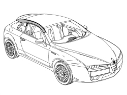
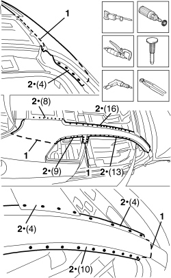
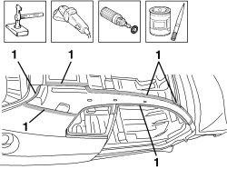
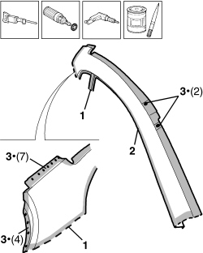
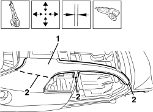
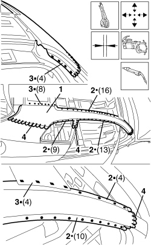
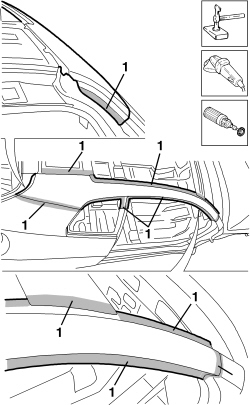
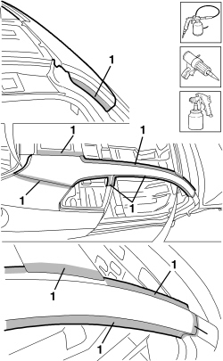

7210E34 R.R. ROOF PANEL/SIDE PANEL CONNECTION PROFILE-MOULDING
- Path
- Procedures > 72 PANELS AND FRAMES > 7210 REMOVING-REFITTING > 7210E EXTERNAL PARTS > 7210E34 R.R. ROOF PANEL/SIDE PANEL CONNECTION PROFILE-MOULDING
- Kind
- repair procedure (removal / refitting; the operation number is the code)
- Applies to
- all engines; all production periods
- Interactive page
- https://sloeber94.github.io/elrnDB-aBrrSpdr/en/#/946003112
Applies to: all engines; all production periods
 Removing
Removing
 Refitting
RefittingOp. 7210E36 R.R. FRONT SIDE DOOR
- Check that the components connected are not distorted by checking the bodyshell alignment measurements using suitable equipment (gauges, templates or jigs).
- Straighten the body as necessary.

Applies to: all engines; all production periods
1. Use a jigsaw following the cutting lines shown in the diagram.
- Use a rotary brush to remove the paint and gain access to the spot welds.
2. Use the chamfering machine to remove the spot welds shown in the diagram.
- Use the drill to chamfer the spot welds that aren't accessible to the chamfering machine.
- Use a hammer and chisel to remove the previously chamfered spot welds.
- Remove the part and the offcuts from the vehicle.

Applies to: all engines; all production periods
- Straighten the edges of the vehicle using a hammer and dolly block.
- Remove the spot weld residues using a disc grinder.
- Use a rotary brush to clean the previously treated areas.
1. Apply electro-galvanizing paint.

Applies to: all engines; all production periods
Refitting
Removing1. Work at the bench and cut the part at the points shown in the figure, making sure that a section of the panel remains for overlapping.
2. Remove the anti-corrosion treatment from the entire perimeter of the inside and outside of the replacement part using a rotary brush.
3. Drill out the part at the indicated points.
- Apply electro-weldable paint to the edges involved.

Applies to: all engines; all production periods
1. Position the replacement part correctly on the vehicle and secure it using self-locking clamps.
- Fit the door housing seal and, if necessary, the door.
- Check the alignment and the surrounding gaps.
2. Use the circular saw to cut the edges of the panel so that the join line is perfect.
- Remove the replacement part, the excess panels and the components used for the adjustment.

Applies to: all engines; all production periods
1. Position the replacement part correctly on the vehicle and secure it using self-locking clamps.
- Check the alignment and the surrounding gaps.
2. Use a spot welder to weld the areas shown in the diagram.
3. Use a MIG welder to fill weld the openings made previously.
4. Use a MIG welder to seam weld in the join areas.

Applies to: all engines; all production periods
- Correct any distortions to the panel using a mallet and dolly block.
1. Use a disc grinder to level the welds.
- Use a rotary brush to clean the previously welded areas.

Applies to: all engines; all production periods
1. Apply anti-oxidant protection to the areas involved in the welding.
- Seal the join lines between the replacement part and the vehicle.
- Proceed with the painting stage.

Applies to: all engines; all production periods